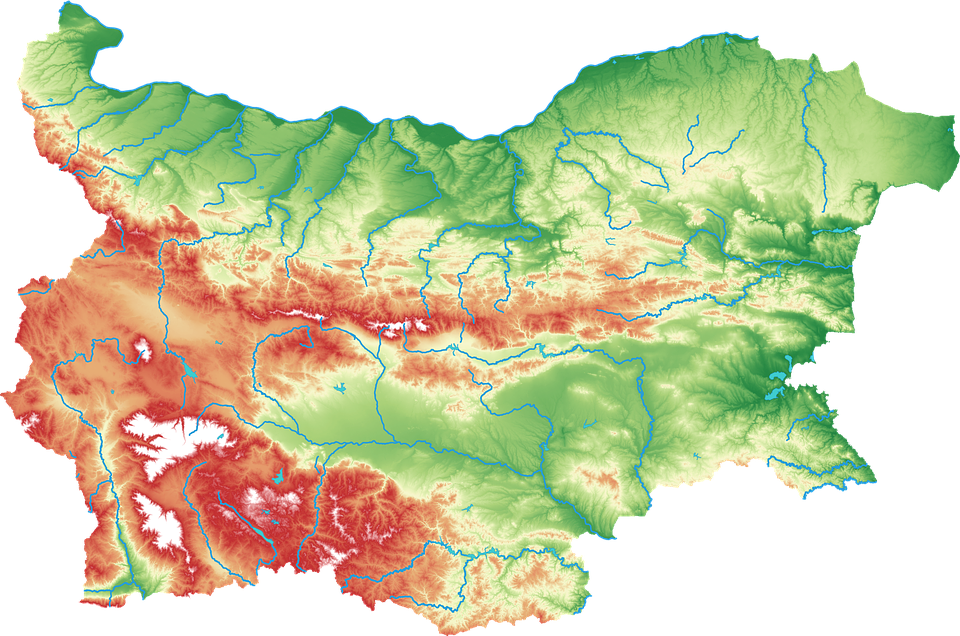

|  | ТЕРИТОРИЯ |
Република България е държава в Югоизточна Европа. Разположена е в източната част на Балканския полуостров и заема 23% от неговата територия. Граничи на север с Румъния; на запад със Сърбия и Северна Македония; на юг с Гърция и на югоизток с Турция. На изток, по протежение на бреговата ивица, страната се мие от водите на Черно море. Със своите почти 111 хил. km² площ и 7 000 039 души (към 31 декември 2018 г.), България се подрежда на 11-о и 16-о място съответно по площ и по население в Европейския съюз. Най-ранните свидетелства за човешко присъствие по земите на днешна България датират от преди 200 – 100 хиляди години, или епохата на палеолита. Към петото хилядолетие преди н.е. в североизточна България процъфтява култура, която създава най-ранните златни украшения в Европа. От античността до Тъмните векове по земите на днешна България се развиват културите на траките, древните гърци, келтите, готите и римляните. С пристигането на славяните през 6 век, а век по-късно и на прабългарите, започва процесът на изграждане на българската държавност. През 681 година е основана Първата българска държава, която достига разцвета в развитието си в началото на X век и оказва голямо влияние на източноевропейските народи чрез книжовните си школи и литературата.